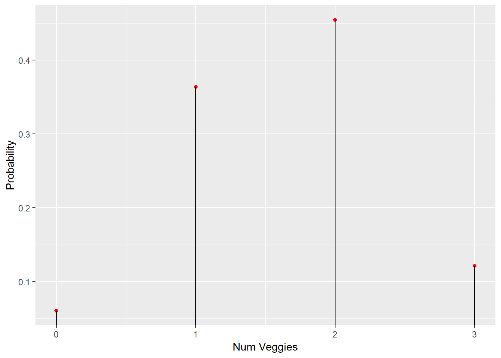
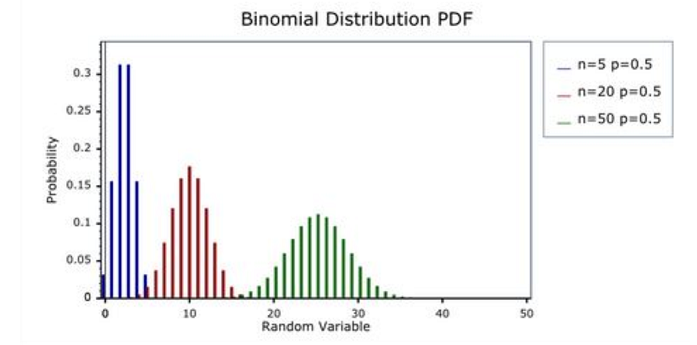

Chapter 2 Module 2: Fundamentals of Probability, Random Variables, Joint Distributions + Collecting Data
Module Sections:
- Fundamentals of Probability
- Random Variables, Distributions, and Joint Distributions
- Gathering and Collecting Data
- Module 2: Homework
Module Content:
- Module 2 Slides - Fundamentals of Probability
- Module 3 Slides - Random Variables, Distributions and Joint Distributions
2.1 Fundamentals of Probability
2.1.1 Set Theory
- A sample space is collection of all possible outcomes
- An event is any collection of outcomes - could be one, all or none
- If the outcome is a member of an event, the event is said to have occured
Event B is said to be contained by A, if all outcomes in B also are in A
- This is the basis of set theory and used widely in probability, although there are some differences between set and probability theory
- If there is no symbol, then this usually means intersection AB in probability - in set theory we would write an inverted U e.g. \(A \cap B\)
- A and B are mutually exclusive (disjoint in set theory) if they have no outcomes in common
- A and B are exhaustive (complimentary in set theory) if their union is S (the entire sample space)
A and B are both mutually exclusive and exhaustive, their union is equal to the sample space but they have no events in common - they are a partition of the sample space
2.1.2 Defining Probability
We assign every event a number P(A) which is the prob. the event will occur
1 We require that the probability is greater than one for all events in the sample space - P(A) >= 0 for all A c S 2 The entire sample space must be equal to one - P(S) = 1 3 For any sequence of disjoint sets, the prob. of the union of that sequence is equal to the sum of the probabilities of those events - A1, A2, … , is P(Vi) = \(\sum_{i} P(A_i)\)
So we have a sample space, and if it satisfies these three properties, then we call it a probability. Sometimes this is referred to as a probability function or a probability distribution, but there is no standard terminology for all probability theory. Set theory helps to prove aspects of probability mathematically, for the purposes on this course, we just need to know what some useful facts are.
- P(Ac) = 1 - P(A) =
The probability of A compliment, which is the event that contains all of the outcomes that are not in the event A, the probability of A compliment is just equal to 1 minus the probability of A. This is useful if the probability of A comliment (P(Ac)) is difficult to compute, where as the probability of A might be very easy to compute.
- \(P (\emptyset)\) =
The probability of the empty set is zero.
- If A c B then P(A) <= P(B) =
If A is contained in B then the probability of A is less than or equal to the probability of B
- For all A, 0 <= P(A) <= 1 =
For any events, the probability of that event is between 0 and 1.
- P(AUB) = P(A) + P(B) - P(AB) =
Probability of A union B is just equal to the sum of the probabilities of those two events minus the probability of the their intersection.
- P(ABc) = P (A) - P(AB) =
The probability of A times B complement is equal to the probability of A minus the probability of the intersection.
2.1.3 An example
Suppose you have a finite sample space. Let the function n(.) give the number of elements in a set.
Then define P(A) = n(A)/n(S). This is called a simple sample space, and it is a probability - we count the number of outcomes and divide by the number of possible outcomes in the sample space.
We can check that it satisfies the three axioms to ensure it is a probability:
- P(A) will always be non-negative because it’s a count
- P(S) will equal 1, by definition
- P(AUB) = n(AUB)/n(S) = n(A)/n(S) + n(B)/n(S) = P(A) +P(B).
If you can put your experiment in to this sample space where each outcome is equally likely, we just need to count to calculate probabilities of events. So for example, if you want to know how likely it is you will roll a specific number, say 6, on two dice, we calculate all the different ways that six occurs then divide this by all possible outcomes (sample space) - = 5 / 36 = or 13.9%
2.1.4 Another example
If the state of Massachusetts issues 6-character license plates, using one of 26 letters and 10 digits randomly for each character, what is the probability that I will receive an all digit license plate?
n(S) = 36 (26 + 10) possibilities for each of 6 characters = 366 = 2.176b n(A) = 10 possibilities (for digits only) for each of 6 characters = 106 = 1m so P(A) = .0005
This is sampling with replacement
What if Massachusetts does not reuse a letter or digit?
Now, in the sample space, there are 36 possibilities (26 + 10) for the 1st character, 35 left for the 2nd, and so on.
n(S) = 36x35x34x33x32x31 = 36!/30! = 1.402b
Similarly, in the event, there are 10 possibilities for the 1st character, 9 left for the 2nd, and so on.
n(A) = 10x9x8x7x6x5 = 10!/4! = 151k
so P(A) = 1.402b / 151k = .0001
This is sampling without replacement
2.1.5 Ordered and Unordered Arrangements
In the examples so far, we have used a series of counting rules - combinatorics i.e. combinations of objects belonging to a finite set in accordance with certain constraints.
If an experiment has two parts, first one having m possibilities and, regardless of the outcome in the first part, the second one having n possibilities, then the experiment has m * n possible outcomes - this is what we do intuitively
Any ordered arrangement of objects is called a permutation. The number of different permutations of N objects is N! The number of different permutations of n objects taken from N objects is N!/(N-n)! This is the case in the license plate example previously given
Any unordered arrangement of objects is called a combination. The number of different combinations of n objects taken from N objects is N!/{(N-n)!n!}. We typically denote this \(\binom{N}{n}\) - N (big objects) choose n (combinations). This is where the order of objects doesn’t matter i.e. different orderings don’t matter - we take out the ordering
So if we had 9 people who each wanted to shake hands, if order doesn’t matter then it is a combination and we take 9 and choose 2 so it becomes:
9! / {(9-2)! * 2!} = 9! / {7! * 2!} = 362,880 / {5,040 * 2} = 362,880 / 10,080 = 36 combinations
Note, if order did matter and we used the permutations formula the total would be twice as many
2.1.6 Office Arrangements and Pizza Toppings
Q: If there are six vegetarian pizza toppings and five non-veg, if I randomly choose two from a hat containing all items, what is the probability that I end up with a pizza that has one veg and one non-veg topping?
A:
First we need to count the number of possabilities in the sample space e.g. {(V1, V2), (V1, V3), (V1, V4), (V1, N1) …} n(S) = \(\binom{11}{2}\) = 55 - All outcomes are equally likely
Now we need to define our outcome n(A) = there are A = {(V1, N1), (V1, N2), (V2, N1) … } n(A) = 6 * 5 = 30
So the probability is N(A) / n(S) = 30 / 55 = 0.55
In general, I could have chose n toppings and asked what is the probability that my pizza had n1 vegetarian toppings and n2 non-vegetarian toppings. There would, then, be \(\binom{6}{n_1}\) possibilities for the veg toppings and \(\binom{5}{n_2}\)for the non-veg toppings. In other words,
\[P(n_1 veg, n_2 non-veg)= \binom{6}{n_1} \binom{5}{n_2} \\ \binom{11}{n}\] This is the basis of the hypergeometric distribution.
2.1.7 Independence and Basketball Example
We call probabilistic events stochastic events. One of the most fundamental relationships between stochastic events is independence.
- Events A and B are independent if P(AB) = P(A) P(B)
That is to say, events A and B are independent if the probability of their intersection is equal to the product of their probabilities.
- independent events is that knowing one event occurred doesn’t give you any information about whether the other occurred.
This is best represented with an example. If you toss one die, once. Consider the event, A, that you roll a number less than 5, and the event, B, that you roll an even number. Are these events independent?
You might consider how could they be, as they rely on the same roll of a die?
If we use the previous example for independence, we check:
Probability of event A is P(A) = 2/3
Probability of event B is P(B) = 1/2
Probability of their intersection is P(AB) = 1/3 which is the same as P(A) P(B)
So yes, it does satisfy the definition of independence. AB is rolling an even number less than 5 (e.g. 2 or 4) and P(A)P(B) = P(AB)
So knowing one event occurred doesn’t give you any information about whether an other occured
In another example, if we had a bag of ten poker chips numbered 1 to 10, with 3 different colours - \(\color{red}{\text{Red(1,2,3,4,5)}}\), \(\color{blue}{\text{Blue(6,7)}}\) or \(\color{green}{\text{Green(8,9,10)}}\)
If choosing a poker chip, A that it is blue, and B that it is even, independent?
Probability of event A is P(A) = 2/10 (.2)
Probability of event B is P(B) = 5/10 (.5)
Probability of their intersection is P(AB) = 1/10 (or .1) which is the same as P(A) P(B)
So yes they are independent, knowing one (that it is blue) does not give you any information about an other event (it is even).
Note that mutually exclusivity (disjoint events) and independence are not the same. Mutually exclusive events are not independent, and independent events cannot be mutually exclusive. Events are mutually exclusive if P (A and B) = 0.
So our independent events - blue and even - are not mutually exclusive, they can occur at the same time. Put another way, because events can’t happen at the same time (disjoint or mutually exclusive), they can’t be independent.
So if we take two mutually exclusive events - say the probability of a poker chip being both green (A) and blue (B) - we can check for the three parts of independence as:
Probability of event A is P(A) = 3/10 (.3)
Probability of event B is P(B) = 2/10 (.2)
Probability of their intersection is P(AB) = 0 which is not the same as P(A) P(B) (which is 0.06)
As P (AB) = 0 i.e. they are mutually exclusive they are dependent - knowing one i.e. the chip blue DOES give you information about whether the other event occured - you know it is not green, so the probability of being green goes from 30% before being told, to 0% after being told it is blue.
When events are mutually exclusive, when you know one thing is true the likelihood of the otehr being true becomes zero
For more than two events, we define independence the same way - the events are independent if the probability of their intersection is equal to the product of their probabilities.
2.1.8 Conditional Probability
What if knowing one event has occured tells us something about the probability that another event occured? How can we ‘update’ our knowledge in the event that the first event has occured?
The probability of A conditional on B is denoted as P(A|B). So the probability of A conditional on B, P(A|B), is P(AB)/ P(B), assuming P(B) > 0. We don’t condition on an event if the probability of an event is 0%.
So in effect, by knowing one event has occured, it changes or re-defines our numerator for event B AND it is changing or re-defining our denominator - the part of the sample space which is now relevant - of event B.
There is a relationship between indepdence and conditional probability. Suppose A and B are independent and P(B) > 0. Then,
P(A|B) = P(AB)/P(B) = P(A)P(B) (as they are indepdent this is the same as P(AB)) / P(B) = P(A) (we cancel out P(B) from the previous)
or simply
P(A|B) = P(AB)/P(B) = P(A)P(B)/P(B) = P(A)
2.1.9 Conditional Probability in American Presidential Politics
If candidates for Republican nomination had the following probabilities - these might be obtained from looking at betting markets
Trump P(A1) = .4
Cruz P(A2) = .3
Rubio P(A3) = .2
Carson P(A4) = .1
How can we compute the probability of a Republican win for the presidency or P(W) i.e. the general election?
Conditional on winning the nomination, the candidates have following probabilities of winning the general election:
Trump P(W|A1) = .25
Cruz P(W|A2) = .2
Rubio P(W|A3) = .6
Carson P(W|A4) = .4
The probability of a Republic win is equal to the probability of the intersection between a Republican win and the sample space.
The sample space is the union between the four events A1 through A4. A1 through A4 are mutually exclusive and exhaustive events and therefore form a partition.
In terms of notation, we therefore have:
P(W) = P(WS)
= P(W(A1 U A2 U A3 U A4)) because A1-A4 are mutually exclusive and exhaustive sets, a partition
= P(WA1 U WA2 U WA3 U WA4)
= P(WA1) + P(WA2) + P(WA3) + P(WA4)
= P(W|A1)P(A1) + P(W|A2)P(A2) + P(W|A3)P(A3) + P(W|A4)P(A4)
So P(W) = .4x.25 + .3x.2 + .2x.6 + .1x.4 = .32
2.1.10 Bayes’ Theorem
So far, we have seen that the probability of the intersection between A and B is equal to the Probability of B conditional on A times the probability of A:
- P(AB) = P(B|A)P(A) = P(A|B)P(B)
- provided P(A) > 0 and P(B) > 0 i.e. both A and B have positive probabilities
- so we can write P(A|B) = P(B|A)P(A)/P(B)
We also saw a slightly more complicated version of this, where the probability of B is the probability of B conditional on A times the probability of A, plus the probability of B conditional on A complement times the probability of A complement (note we saw this, albeit with more compliments, when looking at the Conditional Probability in American Presidential Politics section)
- P(B) = P(B|A)P(A) + P(B|Ac)P(Ac)
- P(A|B) = P(B|A)P(A)/{P(B|A)P(A) + P(B|Ac)P(Ac)}
C is compliment, and we can do this since A and Ac are partitions of the sample space S.
A pregnant woman lives in an area where the Zika virus is fairly rare - 1 in 1000 people have it. Still, she’s concerned, so she gets tested. There is a good but not perfect test for the virus—it gives a positive reading with probability .99 if the person has the virus and a positive reading with probability .05 if the person does not. Her reading is positive. How concerned should we be?
P(Z) = .001 (unconditional probability of having Zika) P(Zc) = .999 (999 people don’t have it) P(+|Z) = .99 (probability of having a positive test result, conditional on having the zika virus - there is a 1% change of a false negative) P(+|Zc) = .05 (probability of having a positive result if you don’t have the virus is 5% - false positive rate) P(Z|+) = P(+|Z)P(Z)/{P(+|Z)P(Z) + P(+|Zc)P(Zc)} - Bayes theorem = .019 - less than 2% probability
So the introduction of our new data results in us updating our probability based on the imperfect test, but it doesn’t get updated by much as it still possible it’s wrong and the prevelance rate of the zika virus is rare.
Example 2
Assume that the probability of having a rare condition is 1%. It is possible to test for the condition, but the test is imperfect. If you have the condition, there is an 85% chance that you will test positive. If you do not have the condition, there is a 5% chance that you will test positive. Call the condition C, so that P(C) = 0.01, and call a positive test t+, so that p(t+|C) = 0.85.
What is the probability p(t+) that you test positive for the condition?
So the Probability of having the condition is P(C) 0.01 * P(t+|C) = .85 which is the probability at a test you will test positive = 0.0085 + P(Cc) * P(t+|Cc) = 0.99 * 0.05 = 0.0495 = 0.058
Suppose that you tested positive for the condition. What is the probability that you truly have the underlying condition?
P(C) = .01 (unconditional probability of having condition) P(Cc) = .99 (99 people don’t have it) P(t+|C) = .85 (probability of having a positive test result, conditional on having the condition) P(t+|Cc) = .05 (probability of having a positive result if you don’t have the virus is 5% - false positive rate) P(C|+) = P(t+|C)P(C)/{P(t+|C)P(C) + P(t+|Cc)P(Cc)} - Bayes theorem = 0.0085 / {0.0085 + 0.0495} = .15 - around than 15% probability
Suppose that a new test is developed that is more accurate. Now, the probability of testing positive if you have the condition is 94%, and the chance of testing positive if you do not have the condition is only 4%. Now, what is the probability p(t+) that you test positive for the condition?
So the Probability of having the condition is P(C) 0.01 * P(t+|C) = .94 which is the probability at a test you will test positive = 0.0094 + P(Cc) * P(t+|Cc) = 0.99 * 0.04 = 0.0396 = 0.049
Suppose that you tested positive for the condition. What is the probability that you truly have the underlying condition?
P(C) = .01 (unconditional probability of having condition)
P(Cc) = .99 (99 people don’t have it)
P(t+|C) = .94 (probability of having a positive test result, conditional on having the condition)
P(t+|Cc) = .04 (probability of having a positive result if you don’t have the virus is 5% - false positive rate)
P(C|+) = P(t+|C)P(C)/{P(t+|C)P(C) + P(t+|Cc)P(Cc)} - Bayes theorem
= 0.0094 / {0.0094 + 0.0396}
= .19 - around than 15% probability
Suppose that there is an 80% chance you will be invited to a dinner party on a Friday or Saturday evening. In contrast, there is only a 50% chance that you will be invited to a dinner party on one of the other nights of the week. Suppose that you know that you’ve been invited to a dinner party tonight, but have forgotten which day of the week it is. Once you know that you’ve been invited to a dinner party, what is the chance that it is either Friday or Saturday? (Please round your answer to 2 decimal places. For example, if the correct answer is 0.6724, please input 0.67.)
Hint: Using the notation of Zika question, Let Z:= { Fri, Sat} and Z^c = { M,T,W,Th,Sun}. Let “+” denote invitation. You are given Pr(“+”| Z) = 0.8 and Pr(“+”| Z^c) = 0.5. We want to compute Pr( Z | “+”)
P(Z) = .286 (unconditional probability of it being Friday or Saturday)
P(Zc) = .714 (the other 5 days of the week)
P(+|Z) = .8
P(+|Zc) = .5
P(Z|+) = P(+|Z)P(Z)/{P(+|Z)P(Z) + P(+|Zc)P(Zc)} - Bayes theorem
= .389 - around 40% probability
2.2 Random Variables, Distributions and Joint Distributions
A random variable is a real-valued function whose domain is the sample space - it goes from the sample space to the real line.
A probability goes from the set of all subsets of the sample space in to the unit interval e.g. [0,1] between zero and 1
A random variable goes from the sample space to the real line and it has some numerial charecteristics of the sample space we are interested in.
The probability that something exists induces a distribution of the random variable, they are not the same.
There are two types of random variable:
- Discrete - one that can take on only a - finite or infinite - countably number of values
- Continous - a random variable that can take on any value in some interval, bounded or unbounded, of the real line
Discrete random variables can be approximated using a continous random variable, so we typically just use continous. Most of the example we have seen so far in this section have dealt with discreet random variables.
2.2.1 Probability Functions of Random Variables
For discrete random variables, we often start with a verbal description, calculate probabilities for each value of the random variable, and then write down a function or draw a graph describing those probabilities for different values of the random variable. This is called a probability function (PF). We saw one of these before in the hypogeometric and binomial, when looking at the pizza toppings.
Note that:
- The term probability density function is used to draw attention to the fact that we are discussing a continuous random variable.
- The term probability mass function is used to draw attention to the fact that we are discussing a discrete random variable.
- The term probability function - or sometimes just the term “distribution” - is used when we are speaking in more general terms, when we’re discussing both “flavors” of probability function or the distinction between the two types of probability functions/random variables doesn’t matter.
Hypergeometric (pizza topping) random variable:
1 Verbal description - Let X be the number of vegetarian toppings I get on my pizza if I draw the Area Four toppings randomly (without replacement)
2 Calculation - We can calculate the probability that X = 0, 1, 2, and so forth, up to the maximum of 6 or n, whichever is smaller, using the formula from last time. Six is the maximum number of veg toppings available, n is the number of toppings chosen at random. If there are 0 toppings of a particular type, the result will be undefined, so we adjust 0! to be defined as just 1. Also, to be consistent with notation for the random variable, n1 from before now becomes x and since we only have two options, n2 now becomes n - x
\[P(x veg, n - x non-veg)= \binom{6}{x} \binom{5}{n - x} \\ \binom{11}{n}\]
3 If we then take an example, such as 3 veg toppings - n = 3 - we can calculate the probabilities for each n
P(X=0) = 6/99
P(X=1) = 36/99
P(X=2) = 45/99
P(X=3) = 12/99
And we can represent the probability function graphically, with points (aka point mass) then add vertical lines under each point to the axis to make it easier to read e.g.
library(ggplot2)
veggie_choices = 6
meat_choices = 5
num_toppings = 3
veggie_received = 0:num_toppings
v = dhyper(x = veggie_received,
m = veggie_choices,
n = meat_choices,
k = num_toppings)
for (i in 1:length(v)) {
print(paste0("Probability of ",
i-1,
" veggie toppings is: ",
round(v[i], 3)))
}## [1] "Probability of 0 veggie toppings is: 0.061"
## [1] "Probability of 1 veggie toppings is: 0.364"
## [1] "Probability of 2 veggie toppings is: 0.455"
## [1] "Probability of 3 veggie toppings is: 0.121"ggplot(mapping = aes(x = 0:3, y = v)) +
geom_point(color = 'red') +
labs(x = 'Num Veggies', y = 'Probability') +
geom_segment(xend = 0:3, yend=0)
2.2.2 The Hypergeometric Distribution
We can represent this in a more general way using notation. We say that X has a “hypergeometric distribution with parameters N, K, & n,” denoted X ~ H(N,K,n). Where
- N = Total number of toppings
- K = Total number of veg toppings
- n = The number we choose
Its Probability Function (PF) is defined similar to before, however we add a note for which values of x that there is positive probability. We should, if being fully formal, also add a final part which states it is 0 otherwise. If this is not explicit, as shown below, in terms of the zero otherwise, we can assume this to be the case.
\[fx(x)= \binom{K}{x} \binom{N-K}{n - x} \\\binom{N}{n}\] \[ where \; x = max(0, n + K-N),...,min(n,K) \]
The hypergeometric distribution describes the number of number of “realized successes” (in a given sample - represented as x) in n trials where you’re sampling without replacement from a sample of size N, whose initial probability of success was K/N.
The function provides the probability of X (number of successful outcomes / number of possible outcomes in the sample space).
2.2.3 Steph Curry Shooting example
If Steph has a probability of making 44% of any shot taken and therefore 56% chance of missing, we can use the binomial formula to calculate the probability of making n shots out of 6 possible shots as follows.
*For more information see the Binomial Coefficient
X has a “binomial distribution with parameters n & p,” denoted \(X \sim B(n,p)\). Its PF is
\[fx(x)= \binom{n}{x} p^x (1-p)^{n-x} \; \; \; where \; x= 0,1,...n\]
The binomial distribution describes the number of “successes” in n trials where the trials are independent and the probability of success in each is p.
So plugging in our example we get
\[fx(x)= \binom{6}{x} .44^x (.56)^{6-x}\]
Which yields:
P(X=0) = .03
P(X=1) = .15
P(X=2) = .29
P(X=3) = .30
P(X=4) = .18
P(X=5) = .06
P(X=6) = .01
As the number of n increases, if p = 50% (a symetric distribution), the distribution would begin to look like a normal distribution.

In another example, suppose that you will take 3 penalty kicks in a row. The likelihood of making each penalty kick is ¾ or 75%. What is the probability that you will score 2 (and only 2) of the 3 penalty kicks?
\[fx(x)= \binom{3}{x} .75^x (.25)^{3-x}\] P(X=0) = .02
P(X=1) = .14
P(X=2) = .42 <- this is the answer
P(X=3) = .42
2.2.4 Properties of the Probability Distribution
So for a general probability function, we have some broad properties:
- \(0 <= f_x(x_i) <= 1\) which is to say the value of any probability function is going to be between 0 and 1
- \(Σ_i f_x_ (x_i) = 1\) if you sum up over all of the possible values it will sum to 1
- \(P(A) = P(XcA) = Σ_Af_x(x_i)\) which is to say if you want the probability over a set of values of x, you just sum up the individual values for each item in the set
For a continous random variable, we rarely start with a verbal description. Instead, we typically have a density that describes the probability that the random variable is in various regions. The density, or probability density function (PDF) is the continuous compliment to the discrete PF. The PF (discret) and PDF (continous) are similar but not exactly the same.
A random variable X is continuous if there exists a nonnegative function f_X_ such that for any interval A c R as follows. We tend to speak about a region, that A is in a region of the real line (R), the probability that X is in A is equal to the integral over that region A of the PDF.
\[P(X c A) = \int_{A} f_X(x)dx\]